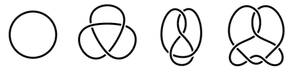
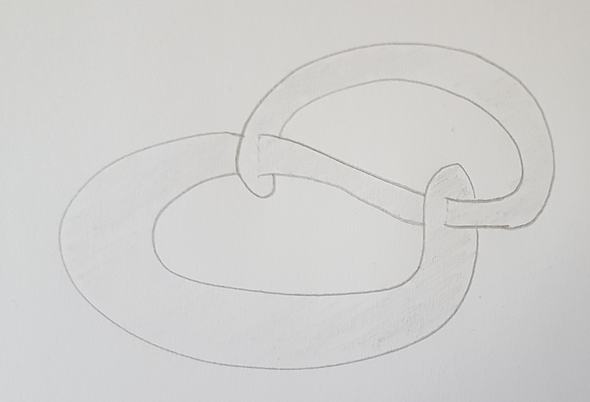
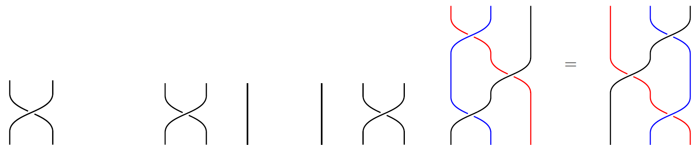
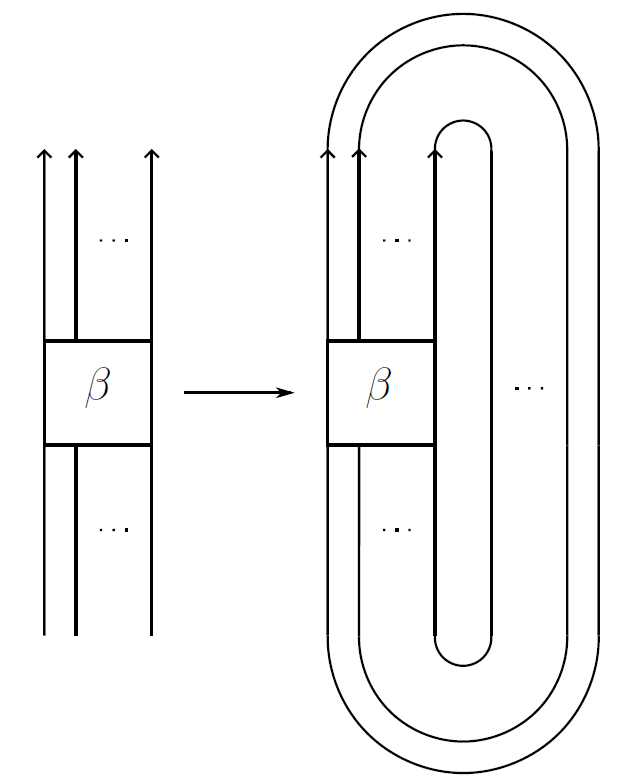
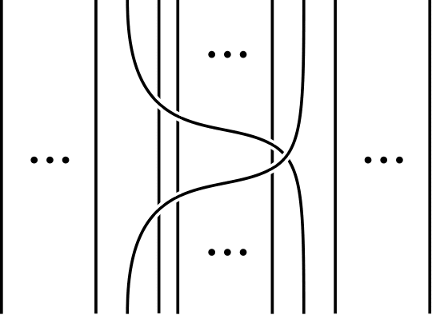

More about my research interests
I am interested in low-dimensional topology, which is the area in topology that studies manifolds of dimension \(4\) and below. In particular, I like to study knots as closures of braids, and I like to think about (non)orientable surfaces embedded in the \(4\)-ball that bound a given knot in the \(3\)-sphere or two such knots, e.g. knot concordances.
I also enjoy thinking about braid groups and their Garside structures, knotted surfaces, \(3\)- and \(4\)-dimensional manifolds, Khovanov and Heegaard Floer homology.
Below is an informal introduction to the following topics:
↪ What is knot theory?
↪ Slice knots and knot concordance
↪ Knots as closures of braids
What is knot theory? ⤴
Classical knots in dimension \(3\) are smooth embeddings of the (oriented) sphere \(S^1\) into Euclidean \(3\)-space \(\mathbb{R}^3\) or (more often) the \(3\)-sphere \(S^3 \cong \mathbb{R}^3 \cup \{\infty \}\). We identify such embeddings with their images and consider two of them to be equivalent and the images to be isotopic knots or knots of the same type if the embeddings are ambient isotopic.
Originally, knot theorists tried to distinguish isotopy classes of knots using tools from algebra, analysis, geometry and topology in order to tabulate them. A knot invariant is a function which assigns to each knot \(K\) an object \(f(K)\) in such a way that knots of the same type are assigned equivalent objects.
An example is the group of a knot \(K\) which is the fundamental group of the complement of \(K\) in \(S^3\). Although it is not a complete knot invariant, i.e. non-isotopic knots could be assigned isomorphic groups, the group of a knot is so far one of the strongest known tools to recognize different knot types. A consequence of Dehn's lemma - a deep result in the study of \(3\)-dimensional manifolds stated by Dehn in the beginning of the 20th century, but only proven by Papakyriakopolous in 1957 - is that there is only one knot type which has an infinite cyclic knot group: the unknot, represented by the embedding \(S^1 \hookrightarrow \mathbb{R}^2 \times \{0\} \subset \mathbb{R}^2 \times \mathbb{R} \cong \mathbb{R}^3 \subset S^3.\) This embedding extends to an embedding of a disk \(D^2 \hookrightarrow \mathbb{R}^2 \times \{0\} \subset \mathbb{R}^2 \times \mathbb{R} \subset S^3\) and it turns out that a knot is isotopic to the unknot if and only if it bounds an embedded disk in \(S^3\).

Several different knot types: the unknot, the trefoil, the figure eight knot
and the easiest (in terms of crossing number) non-trivial prime slice knot \(6_1\).
Slice knots and knot concordance ⤴
The concept of "sliceness" is in a sense a natural generalization in dimension \(4\) of the question whether certain knots are isotopic to the unknot.
A knot \(K\) in \(S^3\) is (smoothly) slice if it bounds a smoothly embedded \(2\)-dimensional disk \(D^2\) in \(B^4\), the \(4\)-ball bounded by \(S^3\).
It is one of the mysteries of \(4\)-dimensional topology that constructions such as finding slice disks can sometimes be done in the topological category but fail to work smoothly.
In 1982 Freedman showed that knots with trivial Alexander polynomials \(\Delta_K(t) \doteq 1\) are topologically slice, i.e. they bound a topologically locally flat disk in \(B^4\). Gompf used this result to find the first infinite family of knots that are topologically slice, but not smoothly slice. These examples can be used to construct exotic \(\mathbb{R}^4\)'s - manifolds that are homeomorphic, but not diffeomorphic to \(\mathbb{R}^4\).

An example of a slice knot, the square knot. Shaded is an immersed (ribbon) disk in \( \mathbb{R}^3 \) bounding this knot, which can be "upgraded" to an embedded disk in \(B^4\) bounding the same knot.
The notion of sliceness leads to a second equivalence relation on the set of knots:
Two knots \(K_0\) and \(K_1\) are called concordant if the connected sum \(K_0 \# -K_1\) is a slice knot. Here for a knot \(K\), its inverse \(-K\) is the image of \(K\) under an orientation-reversing diffeomorphism of \(S^3\) with the opposite orientation. (To properly define the connected sum operation we should really think of a knot \(K\) as a pair of oriented manifolds \((S^3, S^1)\); then the connected sum of two knots is defined in the standard way for oriented pairs.)
The set of concordance classes of knots forms an abelian group with the group operation induced by connected sum. The unknot represents the identity element while the additive inverse of a concordance class \([K]\) is \([-K]\) (which justifies the name inverse for \(-K\)).
Isotopic knots are concordant. The converse is in general not true. For example, for any nontrivial (not isotopic to the unknot) knot \(K\) the knot \(K \# -K\) is a nontrivial slice knot, e.g. the square knot pictured above, which is the connected sum of the trefoil and its inverse.
Knots as closures of braids ⤴
Informally, for \(n \geq 1\), an \(n\)-braid is a collection of \(n\) non-intersecting, unknotted and never-returning paths in 3-dimensional space connecting \(n\) distinguished points to another set of \(n\) distinguished points.
Two \(n\)-braids are considered the same if there is an ambient isotopy taking one of them to the other.
The braid group on \(n\) strands, denoted \(B_n\), is the group of isotopy classes of \(n\)-braids, where the group operation is given by stacking braids on top of each other and rescaling.
The classical presentation for \(B_n\) with generators \(\sigma_1, \ldots, \sigma_{n-1}\) and relations
\[ \sigma_i \sigma_j = \sigma_j \sigma_i \quad \text{if } | i-j| \geq 2 \]
\[ \text{and} \quad \sigma_i \sigma_{i+1} \sigma_i = \sigma_{i+1} \sigma_{i} \sigma_{i+1}
\]
was first introduced by Artin in 1925. The generators \(\sigma_1, \ldots, \sigma_{n-1}\) correspond to the braids that exchange two consecutive of the distinguished points by a half-twist.
The picture below illustrates the generator \(\sigma_1\) of the braid group \(B_2 = \langle \sigma_1 \rangle\) on two strands on the left. In the middle and on the right, you see the two generators \(\sigma_1\) and \(\sigma_2\) of the braid group \(B_3\) and the braid relation \(\sigma_1 \sigma_{2} \sigma_1 = \sigma_{2} \sigma_{1} \sigma_{2} \) between them. Note that
\(B_3 = \langle \sigma_{1}, \sigma_{2} \mid \sigma_1 \sigma_{2} \sigma_1 = \sigma_{2} \sigma_{1} \sigma_{2}\rangle. \)

The generator \(\sigma_1\) of \(B_2\), the generators \(\sigma_1\) and \(\sigma_2\) of \(B_3\), and the braid relation \(\sigma_1 \sigma_{2} \sigma_1 = \sigma_{2} \sigma_{1} \sigma_{2} \) in \(B_3\).
By gluing the top ends of the strands to the corresponding bottom ends, we get a knot or link. On the other hand, by a theorem of Alexander, every knot or link in \(S^3\) can be represented as the closure of an \(n\)-braid for some \(n\geq 1\). The braid group thus provides an algebraic/combinatorial tool for examining knots.

The closure operation on braids.
I like to study different notions of positivity for braids. A positive braid on \(n\) strands is an \(n\)-braid that can be written as a positive braid word \(\sigma_{s_1} \sigma_{s_2} \cdots \sigma_{s_l}\) with \(s_i \in \{1, \ldots, n-1\}\) (no inverses \(\sigma_{s_i}^{-1}\) are allowed in the product). An \(n\)-braid is called quasipositive if it is a product of conjugates of the positive Artin generators \(\sigma_i\), and it is strongly quasipositive if the product consists only of certain conjugates of the positive Artin generators, the Birman-Ko-Lee generators. See the figure below for an example. A knot or link is called a (strongly) quasipositive knot if it can be represented as the closure of a (strongly) quasipositive braid, and braid positive if it can be represented as the closure of a positive braid.

A Birman-Ko-Lee generator of the braid group.
Quasipositive knots arise as transverse intersections of smooth algebraic curves in \(\mathbb{C}^2\) with \(S^3 \subset \mathbb{C}^2\), which provides a geometric characterization of these knots by work of Boileau-Orevkov and Rudolph. In the context of smooth concordance, (strongly) quasipositive knots are special. For example, it follows from the (slice-)Bennequin inequalities due to Bennequin and Rudolph that not every knot is concordant to a quasipositive knot. In arXiv:2210.06612, I showed that every strongly quasipositive knot other than the unknot is concordant to infinitely many strongly quasipositive knots.
⤴ go to top